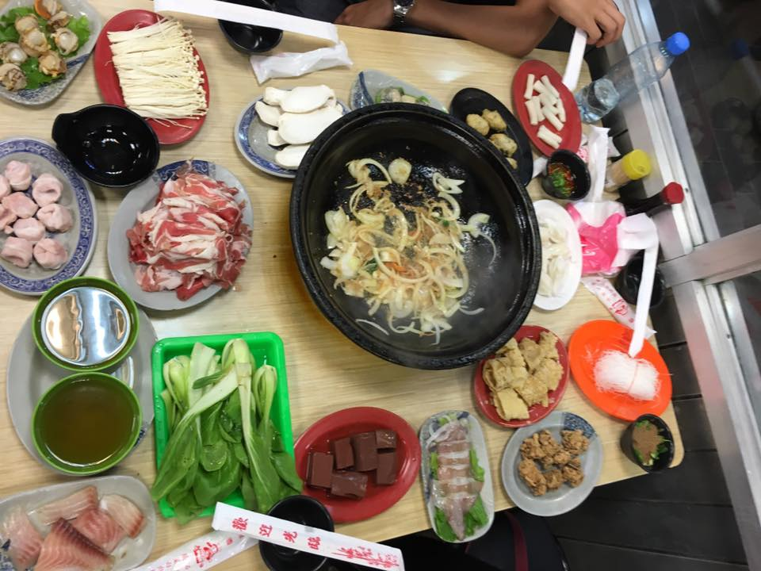

I'm spending my summer in Taiwan and have already been here for for two weeks! This week I explored more of Taiwan and also became more adjusted to life here. The weather was even hotter this week (it's usually around 90 degrees when I wake up!) but I didn't feel as hot as I did the first week, and I also figured out a new makeup/hair routine that can handle the heat!
On Sunday, some new friends and I took a train to Houtong, Pinxi, and Shifen. Houtong is an old mining town that has a ton of feral cats now. The weather was so hot that the cats were mostly just laying around (looking dead) or drinking water while tourists took photos of them. It was still cool to see though, and the scenery was beautiful!

Pingxi has lots of food stalls and also sky lanterns. The lantern colors have different meanings (wealth, love, etc), and you write your wishes on the lantern. Then you put your lantern on the train tracks and someone helps you light the fire and float it away. Every once in a while a train comes and everyone has to get off the tracks. Our lantern had Chinese, Japanese, and English (we each wrote in our native language). I just wrote some basic words on my lantern. Many strangers were taking photos of me writing in English. I hadn't gotten that kind of attention in Taipei for being a foreigner before so it felt a little strange but at the same time I was a little bit flattered in a weird way.
At Shifen we went on a short hike to go see a huge waterfall. The walk felt long because of the heat, but it was totally worth it to see my first big waterfall! It was so beautiful. My favorite part was that there were some Chinese characters carved into a rock by the waterfall that meant "marvelous world", which is a very good description for Taiwan!
After a long day of walking, heat, and riding in the most crowded trains I'd ever been on, we returned to Taipei for some hot pot! You pick out what you want in the pot, then cook it at your table. The table even has a little knob to control the fire under the pot.
During the week my school had a celebration for Dragon Boat Festival. We rolled up paper to practice how to make zongzi (the food eaten at the festival) and then were given actual zongzi. We also played a game where you blow air on a paper boat and try to get it to your opponent's side. I won (probably thanks in part to being super tall and having larger lungs).
On Friday night, my roommate and I went to Taipei 101's highest floors! The trip up cost about $15 USD, but when in Rome, right? Taipei 101 also has one of the the fastest elevator in the world, my ears were popping and actually a bit painful because the trip was so fast. The view was so beautiful. Even at night, Taipei's the prettiest city I've seen. We also saw this giant heavy ball that helps prevent the tower from moving too much during an earthquake or heavy wind, because Taiwan's the perfect place to build a giant tower, right? :)
This week I feel like I really adjusted more to the environment here. The weather doesn't make me feel like dying anymore, I'm rapidly improving my Chinese, and I'm making friends. However, I did accidentally buy some toilet paper that's like adult baby wipes. I also lost my laptop charger and had a hard time finding a new one because I don't know many Chinese words having to do with electronics. Electronics are much more expensive here! I also really want to experience an earthquake (because coming from the Midwest I never have), and we did have an earthquake, but I was on a bus so I felt nothing. And I did get a tiny sunburn from the weekend. However, more and more I'm loving Taiwan!
A link to my full album of Taiwan photos can be found here. Keep checking back for weekly updates!
Questions? Comments? Don't hesitate to contact me!